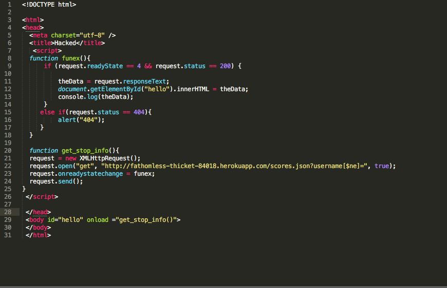

1. Introduction
Description of Product: A web application that maintains final scores and grids of players of the 2048 game. Contains a game center that displays highscores of players.
I was hired to find potential vulnerabilities in the security and privacy of the product.
2. Methodology of testing
I started with Black box testing by trying to insert html code into the database using curl. I then refreshed the page and saw that I was able to simulate a cross site scripting attack.
I viewed the code and found vulnerabilities in cross origin resource sharing and the database. I noticed that user input is never sanitized in the code so I was able to test the database security by making queries to it from the url query string. Lastly, I created a seperate program in the file hack.html that incorporated both mongodb injection and took advantage of the CORS vulnerabilities.
Tools used: curl
3. Abstract of Findings
Vulnerabilities:
- Cross site scripting: when data is taken from users and dynamically incorporated into webpages without validating data. Allows an attacker to make commands and display unwanted data on the webpage. Can be fixed by checking and sanatizing user input before putting it in the database or rendering on the webpage (check for unwanted characters).
- Mongodb injection: could lead to unwanted queries from the database leading to leaks in information to unauthorized users. Sanatize user input/ query string before using it. (check for unwanted characters)
- Cross origin resource sharing: the server side of the web application has been turned into a public resource and can be accessible by any external programs. Therefore the information in the database is not secure and can be tampered with. Make sure the server side is only accessible to domains that you want to allow.
4. Issues found
- Issue: Cross Site Scripting
- Location: When user is prompted to enter a username, the server side route /submit.json does not check to make sure that the input is sanatized and does not resemble html code (Heroku repository- index.js)
- Severity: High - an attacker could effect the main purpose of this web app which is to show the scores of users. If scores are displayed with malicious content interwoven through the web page, the application fails to do its inherent task.
- Description of Issue: No checks are done to make sure user input of username is sanatized. This means that html code can be entered in the username field and this is then stored in the database in the username field. When the game center page is rendered with usernames and scores, this html code is also rendered.
- Proof of Vulnerability: The image below shows that an image tag can be inserted into the data base in the username field and the game center will then display that image as the username.

- Resolution: make sure that the username being input by the user does not contain html characters and tags.
- Issue: Mongodb Injection
- Location: When a get request is made using the /scores.json route in the server side. (Heroku repository- index.js)
- Severity: High - Attackers have access to the full database of scores, usernames, grids and timestamps. In this example, an injection was done to retrieve all data in database. This is harmful and would make all information in database incredibly insecure.
- Description of Issue: When a username is recieved through request.query, special characters are not removed from request.body.username. This means that the database (Mongodb) is vulnerable to attacks because unauthorized queries can be made to the database by adding special characters in the username field.
- Proof of Vulnerability: As shown in the image below, the addition of characters [$ne] tells the database to print all data without a username equal to j. Since j is not a username in the database, every entry was returned.

- Resolution: Remove special characters that could be used to make database queries from request.query.username using the inbuilt function - replace(/[^\w\s]/gi, '');
- Issue: Cross Origin Resource Sharing
- Location: The use of '*' in the response headers in /scores.json and /submit.json routes (heroku app - index.js)The pictures below show the two locations where the vulmnerabilities occur in index.js
- Severity: High- This issue essentially makes the get and post routes a public resource for any domains. The database can be queried also.
- Description of Issue: the '*' is a wild-card that indicates that all domains have access to the server side routes. Anyone can then make POST and GET requests to the app. Data in the database is then vulnerable to attacks
- Proof of Vulnerability: I created a small program that would send a get request to the assignment 3 /scores.json route. My renders everything in the database on the page by using mongodb injection. This shows how any domain can connect with the database.

- Resolution: Instead of a '*', put the name of the domain that has access to this page. No other domains will be able to access the server side routes if this is done.
5. Conclusion
After testing this code for security vulnerabilities I have come to the conclusion that this is a very vulnerable product. Despite a working interface, the security concerns make this product unusable for a user who wishes to maintain privacy. However if steps are taken to improve the product, as mentioned in the resolution sections above, this would not be the case. Think about incorporating user authorization to access data to make the process more secure for users.